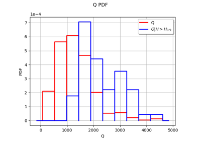
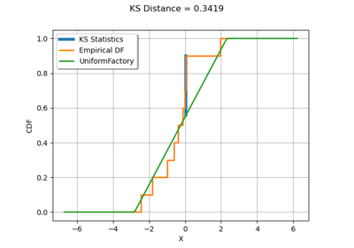
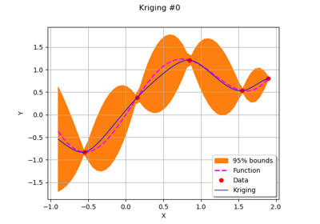
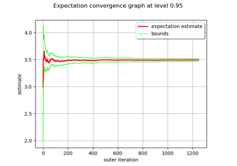
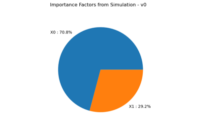
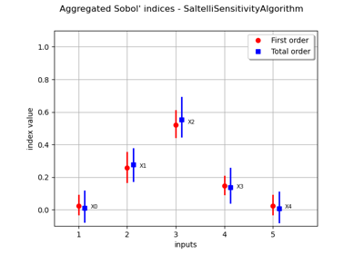
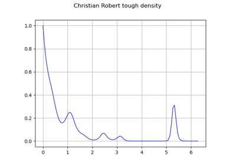

Point¶
- class Point(*args)¶
Real vector.
- Parameters:
- dimensionint,
 , optional
, optional The number of components.
- valuefloat, optional
The components value. Default creates a null vector.
- dimensionint,
Examples
Create a Point
>>> import openturns as ot >>> x = ot.Point(3, 1.0) >>> x class=Point name=Unnamed dimension=3 values=[1,1,1]
Get or set terms
>>> print(x[0]) 1.0 >>> x[0] = 0.0 >>> print(x[0]) 0.0 >>> print(x[:2]) [0,1]
Create a Point from a flat (1d) array, list or tuple
>>> import numpy as np >>> y = ot.Point((0.0, 1.0, 2.0)) >>> y = ot.Point(range(3)) >>> y = ot.Point(np.arange(3))
and back
>>> z = np.array(y)
Addition, subtraction (with compatible dimensions)
>>> print(x + y) [0,2,3] >>> print(x - y) [0,0,-1]
Multiplication, division with a scalar
>>> print(x * 3.0) [0,3,3] >>> print(x / 3.0) [0,0.333333,0.333333]
Methods
add(*args)Append a component (in-place).
at(*args)Access to an element of the collection.
clear()Reset the collection to zero dimension.
dot(rhs)Compute the scalar product.
find(val)Find the index of a given value.
Accessor to the object's name.
Accessor to the vector's dimension.
getId()Accessor to the object's id.
getName()Accessor to the object's name.
Accessor to the object's shadowed id.
getSize()Accessor to the vector's dimension (or size).
Accessor to the object's visibility state.
hasName()Test if the object is named.
Test if the object has a distinguishable name.
Check if the components are in decreasing order.
isEmpty()Tell if the collection is empty.
Check if the components are in increasing order.
Check if the components are in nonincreasing or nondecreasing order.
Check if the components are in nondecreasing order.
Check if the components are in nonincreasing order.
norm()Compute the Euclidean (
 ) norm.
) norm.norm1()Compute the
 norm.
norm.normInf()Compute the
 norm.
norm.Compute the squared Euclidean norm.
Compute the normalized vector with respect to its Euclidean norm.
Compute the normalized vector with respect to its squared Euclidean norm.
resize(newSize)Change the size of the collection.
select(marginalIndices)Selection from indices.
setName(name)Accessor to the object's name.
setShadowedId(id)Accessor to the object's shadowed id.
setVisibility(visible)Accessor to the object's visibility state.
clean
- __init__(*args)¶
- add(*args)¶
Append a component (in-place).
- Parameters:
- valuetype depends on the type of the collection.
The component to append.
Examples
>>> import openturns as ot >>> x = ot.Point(2) >>> x.add(1.) >>> print(x) [0,0,1]
- at(*args)¶
Access to an element of the collection.
- Parameters:
- indexpositive int
Position of the element to access.
- Returns:
- elementtype depends on the type of the collection
Element of the collection at the position index.
- clear()¶
Reset the collection to zero dimension.
Examples
>>> import openturns as ot >>> x = ot.Point(2) >>> x.clear() >>> x class=Point name=Unnamed dimension=0 values=[]
- dot(rhs)¶
Compute the scalar product.
- Parameters:
- pointsequence of float
Scalar product second argument
- Returns:
- dotfloat
Scalar product
Examples
>>> import openturns as ot >>> x = ot.Point([1.0, 2.0, 3.0]) >>> prod = x.dot([4, 5, 6])
- find(val)¶
Find the index of a given value.
- Parameters:
- valcollection value type
The value to find
- Returns:
- indexint
The index of the first occurrence of the value, or the size of the container if not found. When several values match, only the first index is returned.
- getClassName()¶
Accessor to the object’s name.
- Returns:
- class_namestr
The object class name (object.__class__.__name__).
- getDimension()¶
Accessor to the vector’s dimension.
- Returns:
- nint
The number of components in the vector.
- getId()¶
Accessor to the object’s id.
- Returns:
- idint
Internal unique identifier.
- getName()¶
Accessor to the object’s name.
- Returns:
- namestr
The name of the object.
- getShadowedId()¶
Accessor to the object’s shadowed id.
- Returns:
- idint
Internal unique identifier.
- getSize()¶
Accessor to the vector’s dimension (or size).
- Returns:
- nint
The number of components in the vector.
- getVisibility()¶
Accessor to the object’s visibility state.
- Returns:
- visiblebool
Visibility flag.
- hasName()¶
Test if the object is named.
- Returns:
- hasNamebool
True if the name is not empty.
- hasVisibleName()¶
Test if the object has a distinguishable name.
- Returns:
- hasVisibleNamebool
True if the name is not empty and not the default one.
- isDecreasing()¶
Check if the components are in decreasing order.
Examples
>>> import openturns as ot >>> x = ot.Point([3.0, 2.0, 1.0]) >>> x.isDecreasing() True >>> x = ot.Point([3.0, 3.0, 1.0]) >>> x.isDecreasing() False >>> x = ot.Point([1.0, 3.0, 2.0]) >>> x.isIncreasing() False
- isEmpty()¶
Tell if the collection is empty.
- Returns:
- isEmptybool
True if there is no element in the collection.
Examples
>>> import openturns as ot >>> x = ot.Point(2) >>> x.isEmpty() False >>> x.clear() >>> x.isEmpty() True
- isIncreasing()¶
Check if the components are in increasing order.
Examples
>>> import openturns as ot >>> x = ot.Point([1.0, 2.0, 3.0]) >>> x.isIncreasing() True >>> x = ot.Point([1.0, 1.0, 3.0]) >>> x.isIncreasing() False >>> x = ot.Point([1.0, 3.0, 2.0]) >>> x.isIncreasing() False
- isMonotonic()¶
Check if the components are in nonincreasing or nondecreasing order.
Examples
>>> import openturns as ot >>> x = ot.Point([1.0, 2.0, 3.0]) >>> x.isMonotonic() True >>> x = ot.Point([2.0, 2.0, 1.0]) >>> x.isMonotonic() True >>> x = ot.Point([1.0, 3.0, 2.0]) >>> x.isMonotonic() False
- isNonDecreasing()¶
Check if the components are in nondecreasing order.
Examples
>>> import openturns as ot >>> x = ot.Point([1.0, 2.0, 3.0]) >>> x.isNonDecreasing() True >>> x = ot.Point([1.0, 1.0, 3.0]) >>> x.isNonDecreasing() True >>> x = ot.Point([1.0, 3.0, 2.0]) >>> x.isNonDecreasing() False
- isNonIncreasing()¶
Check if the components are in nonincreasing order.
Examples
>>> import openturns as ot >>> x = ot.Point([3.0, 2.0, 1.0]) >>> x.isNonIncreasing() True >>> x = ot.Point([3.0, 3.0, 1.0]) >>> x.isNonIncreasing() True >>> x = ot.Point([1.0, 3.0, 2.0]) >>> x.isNonIncreasing() False
- norm()¶
Compute the Euclidean (
) norm.The Euclidean (
) norm of a vector is defined as:
- Returns:
- normfloat
The vector’s Euclidean norm.
Examples
>>> import openturns as ot >>> x = ot.Point([1.0, 2.0, 3.0]) >>> x.norm() 3.741657...
- norm1()¶
Compute the
norm.The
norm of a vector is defined as:
- Returns:
- normfloat
The vector’s
norm.
Examples
>>> import openturns as ot >>> x = ot.Point([1.0, 2.0, 3.0]) >>> x.norm1() 6.0
- normInf()¶
Compute the
norm.The
norm of a vector is defined as:
- Returns:
- normfloat
The vector’s
norm.
Examples
>>> import openturns as ot >>> x = ot.Point([1.0, 2.0, 3.0]) >>> x.normInf() 3.0
- normSquare()¶
Compute the squared Euclidean norm.
- Returns:
- normfloat
The vector’s squared Euclidean norm.
See also
Examples
>>> import openturns as ot >>> x = ot.Point([1.0, 2.0, 3.0]) >>> x.normSquare() 14.0
- normalize()¶
Compute the normalized vector with respect to its Euclidean norm.
- Returns:
- normalized_vector
Point The normalized vector with respect to its Euclidean norm.
- normalized_vector
- Raises:
- RuntimeErrorIf the Euclidean norm is zero.
See also
Examples
>>> import openturns as ot >>> x = ot.Point([1.0, 2.0, 3.0]) >>> print(x.normalize()) [0.267261,0.534522,0.801784]
- normalizeSquare()¶
Compute the normalized vector with respect to its squared Euclidean norm.
- Returns:
- normalized_vectornormalized_vector
Point The normalized vector with respect to its squared Euclidean norm.
- normalized_vectornormalized_vector
- Raises:
- RuntimeErrorIf the squared Euclidean norm is zero.
See also
Examples
>>> import openturns as ot >>> x = ot.Point([1.0, 2.0, 3.0]) >>> print(x.normalizeSquare()) [0.0714286,0.285714,0.642857]
- resize(newSize)¶
Change the size of the collection.
- Parameters:
- newSizepositive int
New size of the collection.
Notes
If the new size is smaller than the older one, the last elements are thrown away, else the new elements are set to the default value of the element type.
Examples
>>> import openturns as ot >>> x = ot.Point(2, 4) >>> print(x) [4,4] >>> x.resize(1) >>> print(x) [4] >>> x.resize(4) >>> print(x) [4,0,0,0]
- select(marginalIndices)¶
Selection from indices.
- Parameters:
- indicessequence of int
Indices to select
- Returns:
- collsequence
Sub-collection of values at the selection indices.
- setName(name)¶
Accessor to the object’s name.
- Parameters:
- namestr
The name of the object.
- setShadowedId(id)¶
Accessor to the object’s shadowed id.
- Parameters:
- idint
Internal unique identifier.
- setVisibility(visible)¶
Accessor to the object’s visibility state.
- Parameters:
- visiblebool
Visibility flag.
Examples using the class¶


A quick start guide to the Point and Sample classes


Compare unconditional and conditional histograms

Kolmogorov-Smirnov : understand the statistics


Create a polynomial chaos metamodel by integration on the cantilever beam


Example of multi output Kriging on the fire satellite model


Sequentially adding new points to a kriging



Evaluate the mean of a random vector by simulations


Use the post-analytical importance sampling algorithm


Exploitation of simulation algorithm results

Use the FORM algorithm in case of several design points

Non parametric Adaptive Importance Sampling (NAIS)


Test the design point with the Strong Maximum Test


Axial stressed beam : comparing different methods to estimate a probability

An illustrated example of a FORM probability estimate

Estimate Sobol indices on a field to point function

Estimate Sobol’ indices for a function with multivariate output


Example of sensitivity analyses on the wing weight model

Create mixed deterministic and probabilistic designs of experiments


Defining Python and symbolic functions: a quick start introduction to functions



Sampling from an unnormalized probability density


Linear Regression with interval-censored observations